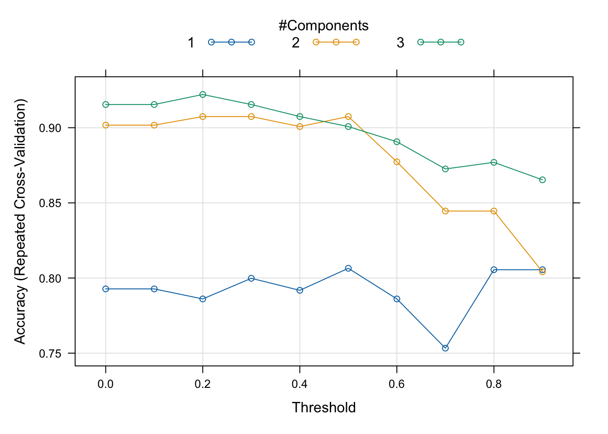
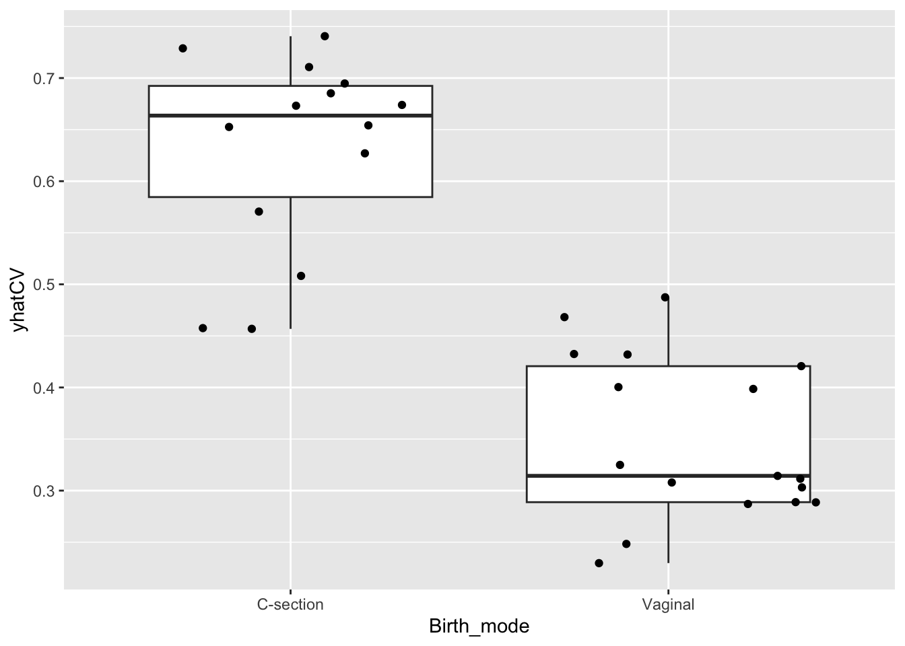
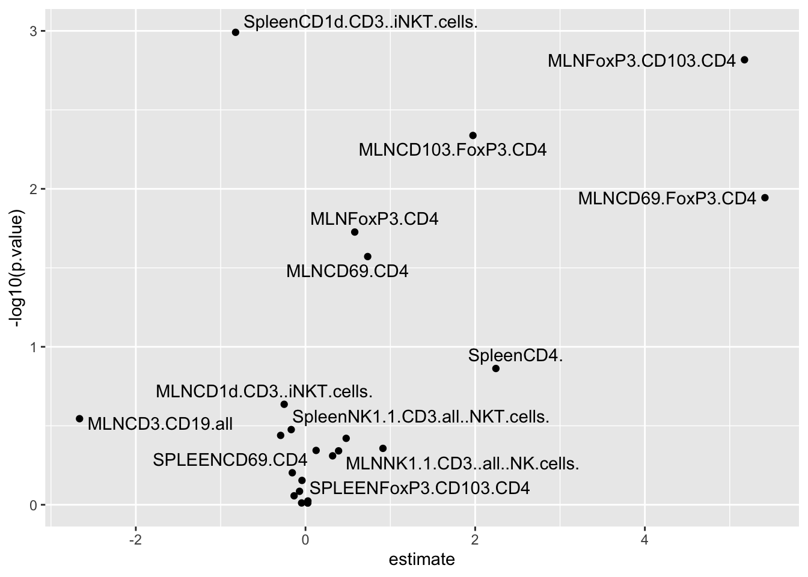
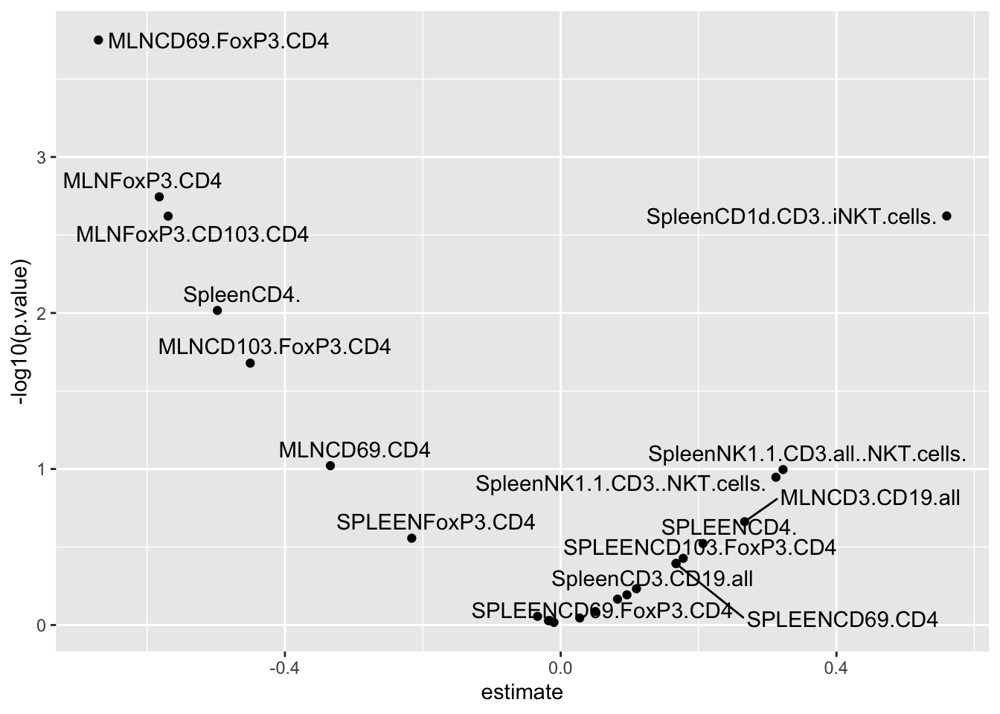
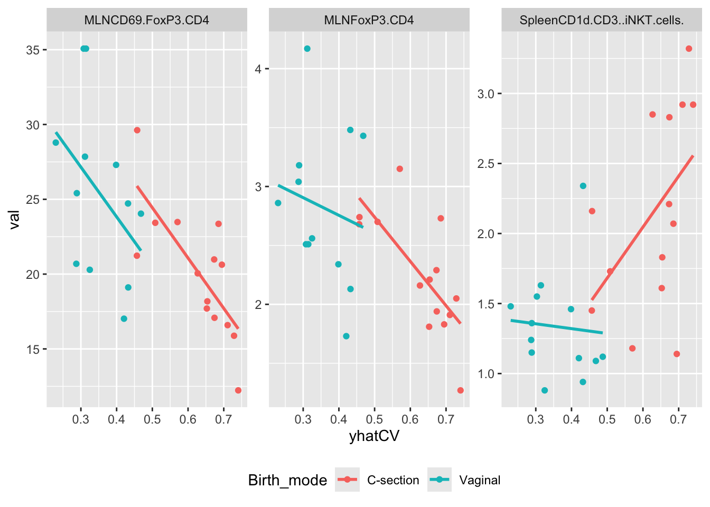

Microbiome is in many cases suspected to be the mechanistic entity causing a correlation between a treatment and a phenotype.
Think about the hygiene hypothesis, where the environment (siblings / household-size, birth mode, rural living, antibiotics etc.) is found related to a range of chronic diseases including asthma, diabetes, allergy etc. Here, one speculates that the environment causes a shift in the microbiome which then in turn gives rise to the disease.
This is classical mediation setup, just with the tweek that the microbiome is not a univariate entity, but merely a multivariate feature set.
Propensity scoring is the concept where the relation between say a treatment and a multivariate data block is turned into a univariate vector. This can sound tricky, but in principle, what is done is that a machine learning model is build between the treatment and the multivariate data and the predictions is then used as this propensity.
The mice birth mode data has a total of n = 31 mice delivered by either vaginal birth or c-section. Microbiome data is collected, and the previous exercises on these data clearly shows that indeed the birth mode matters on the microbiome.
Additionally, measures of immune activity is collected as well (available from the sample_data).
In order to do mediation analysis of how the microbiome mediates the effect of birth mode to immune functionality encompasses the following elements
Here we use the general ML package caret to train and crossvalidate a model classifying birth mode given microbiome data. It takes a fair bit of data wrangling to make it work, but google the scripting and/or copy paste below
library(phyloseq)
library(caret)
library(broom)
library(tidyverse)
load('./data/Mice_csec.RData')
# Preprocess and define GM samples
pc <- 0.0001 # psedo count for log-trans
phyXpp <- phyX %>%
transform_sample_counts(function(x) x / sum(x)) %>%
filter_taxa(function(x) sum(x > 0)>10, TRUE) %>%
transform_sample_counts(function(x) log(x + pc))
# extract feature matrix
X <- phyXpp@otu_table %>% t %>% data.frame()
# add classes
X$trt <- as.vector(phyXpp@sam_data$Birth_mode) %>%
gsub('-','',x = .) # this gsub() fixes the labels
# remove features with 0 variance
sdd <- c(apply(phyXpp@otu_table,1,sd),200)
X <- X[,sdd>0]# some formal settings
repCV10 <- trainControl(method = "repeatedcv",
number = 5,
repeats = 5,
classProbs = T,
returnResamp = "all",
savePredictions = "all",
allowParallel = T,
verboseIter = F)
# Run the model including cross-validation
mdlSPLS <- train(trt ~ ., data = X,
method = 'spls',
preProc = c("center", 'scale'),
tuneGrid = expand.grid(K = 1:3, # K sets number of components
eta = seq(0,0.9,0.1), # eta sets sparsity
kappa = 0.5),
trControl = repCV10)plot(mdlSPLS)
# extract the best model
best(mdlSPLS$results, metric = 'Accuracy', maximize = T)## [1] 23mdlSPLS$results[best(mdlSPLS$results, metric = 'Accuracy', maximize = T),]## K eta kappa Accuracy Kappa AccuracySD KappaSD
## 23 3 0.2 0.5 0.9220952 0.8359673 0.09354527 0.2004915The best model (in a CV sense) is used to generate the propensities wrt. classes.
Although we can use what is optimal in terms of crossvalidation, it may be a wise choice to go for a model that are simpler but with somewhat the same performance.
# compute the average prediction (a probability) from a model with 3 components and eta = 0.4
cvPred <- mdlSPLS$pred %>%
filter(K==2) %>%
filter(abs(eta-0.5)<0.01) %>%
dplyr::mutate(pred = Csection %>% as.numeric()) %>%
group_by(rowIndex) %>%
dplyr::summarise(yhatCV = mean(pred, na.rm = T))
# add all the meta data
cvPred <- data.frame(cvPred, phyXpp@sam_data)Lets have a look at the propensity scores (y-axis) versus the classes they were trained on.
cvPred %>%
ggplot(data = ., aes(Birth_mode,yhatCV)) +
geom_boxplot() + geom_jitter()
What you see in this plot is that there is a range of propensity scores within each class. In essens that mean, that some of the samples from the c-section born group actually have a microbiome mimiking the vaginal groups and vice-versa. Also you see some samples with rather similar propensity-scores but from different groups.
Next step is to establish an association between the exposure (birth mode) and the endpoint (immuno-markers)
Here we use a simple linear model
tb_expo_ep <- cvPred %>%
gather(var,val,MLNCD3.CD19.all:SPLEENCD69.FoxP3.CD4.1) %>%
group_by(var) %>%
do(lm(data = ., val~Birth_mode) %>% tidy) %>%
filter(term!='(Intercept)')
tb_expo_ep %>%
ggplot(data =. , aes(estimate,-log10(p.value), label = var)) +
geom_point() +
ggrepel::geom_text_repel()
Here we see that some MLNxxx markers are higher in vaginal born mice, while SpleenCD1 markers are lower.
Here we use a correlation analysis, or alternatively, in case of covariates, linear regression.
tb_GM_ep <- cvPred %>%
gather(var,val,MLNCD3.CD19.all:SPLEENCD69.FoxP3.CD4.1) %>%
group_by(var) %>%
do(cor.test(data = ., ~val + yhatCV, method = 'spearman') %>% tidy)
tb_GM_ep %>%
ggplot(data = ., aes(estimate,-log10(p.value), label = var)) +
geom_point() +
ggrepel::geom_text_repel()
To some extend this mimik the findings from the exposure - endpoint models, as the propensity score is high when the microbiome is very C-section like.
For a few immune markers we association both towards exposure (birth mode) as well as towards the microbiome propensity of birth mode. For instance MLNCD69.FoxP3.CD4, MLNFoxP3.CD4 and SpleenCD1d.CD3..iNKT.cells, lets run a mediation analysis to reveal whether the effect of the birth mode on the immune markers is through the microbiome or simply just two seperate effects.
library(mediation)
### FOR one example (MLNCD69.FoxP3.CD4)
# setup the data frame (removing missing entries)
df <- cvPred %>% filter(!is.na(MLNCD69.FoxP3.CD4))
# build two models
## mediator models
mediator_model <- lm(yhatCV ~ Birth_mode, df)
## outcome model with both exposure and mediator as explanatory variables
outcome_model <- lm(MLNCD69.FoxP3.CD4 ~ Birth_mode + yhatCV, df)
## Run the mediation analysis and get stats out.
results <- mediate(mediator_model, outcome_model, treat= 'Birth_mode', mediator= 'yhatCV' ,boot=TRUE, sims=500)
summary(results)##
## Causal Mediation Analysis
##
## Nonparametric Bootstrap Confidence Intervals with the Percentile Method
##
## Estimate 95% CI Lower 95% CI Upper p-value
## ACME 9.370 4.410 15.45 <2e-16 ***
## ADE -3.955 -9.907 1.27 0.18
## Total Effect 5.415 1.698 9.01 <2e-16 ***
## Prop. Mediated 1.730 0.823 5.34 <2e-16 ***
## ---
## Signif. codes: 0 '***' 0.001 '**' 0.01 '*' 0.05 '.' 0.1 ' ' 1
##
## Sample Size Used: 26
##
##
## Simulations: 500Here ideed the total effect seems to be mediated (ACME = Average Causal Mediated Effect). While the direct is not significant.
…here is another example
# setup the data frame (removing missing entries)
df <- cvPred %>% filter(!is.na(SpleenCD1d.CD3..iNKT.cells.))
# build two models
## mediator models
mediator_model <- lm(yhatCV ~ Birth_mode, df)
## outcome model with both exposure and mediator as explanatory variables
outcome_model <- lm(SpleenCD1d.CD3..iNKT.cells. ~ Birth_mode + yhatCV, df)
## Run the mediation analysis and get stats out.
results <- mediate(mediator_model, outcome_model, treat= 'Birth_mode', mediator= 'yhatCV' ,boot=TRUE, sims=500)
summary(results)##
## Causal Mediation Analysis
##
## Nonparametric Bootstrap Confidence Intervals with the Percentile Method
##
## Estimate 95% CI Lower 95% CI Upper p-value
## ACME -0.543 -1.179 0.02 0.068 .
## ADE -0.281 -0.983 0.47 0.376
## Total Effect -0.824 -1.256 -0.40 <2e-16 ***
## Prop. Mediated 0.660 -0.029 1.73 0.068 .
## ---
## Signif. codes: 0 '***' 0.001 '**' 0.01 '*' 0.05 '.' 0.1 ' ' 1
##
## Sample Size Used: 27
##
##
## Simulations: 500Here the effect is somewhat mediated but also some is direct though not significant.
cvPred %>%
gather(var,val,MLNCD3.CD19.all:SPLEENCD69.FoxP3.CD4.1) %>%
filter(var %in% c('SpleenCD1d.CD3..iNKT.cells.','MLNCD69.FoxP3.CD4','MLNFoxP3.CD4')) %>%
ggplot(data = ., aes(yhatCV,val, color = Birth_mode)) +
geom_point() +
stat_smooth(method = lm, se = F) +
facet_wrap(~var, scales = 'free') +
theme(legend.position = 'bottom')
For the MLNxxx types the story is pretty clear on a fair part of the effect is through GM. For the SpleenCD1 marker it is not so obvious. In the C-section arm is seems as the microbiome promote a higher response when very c-section like. However, in the Vaginal arm - which are just lower - there is no correlation.